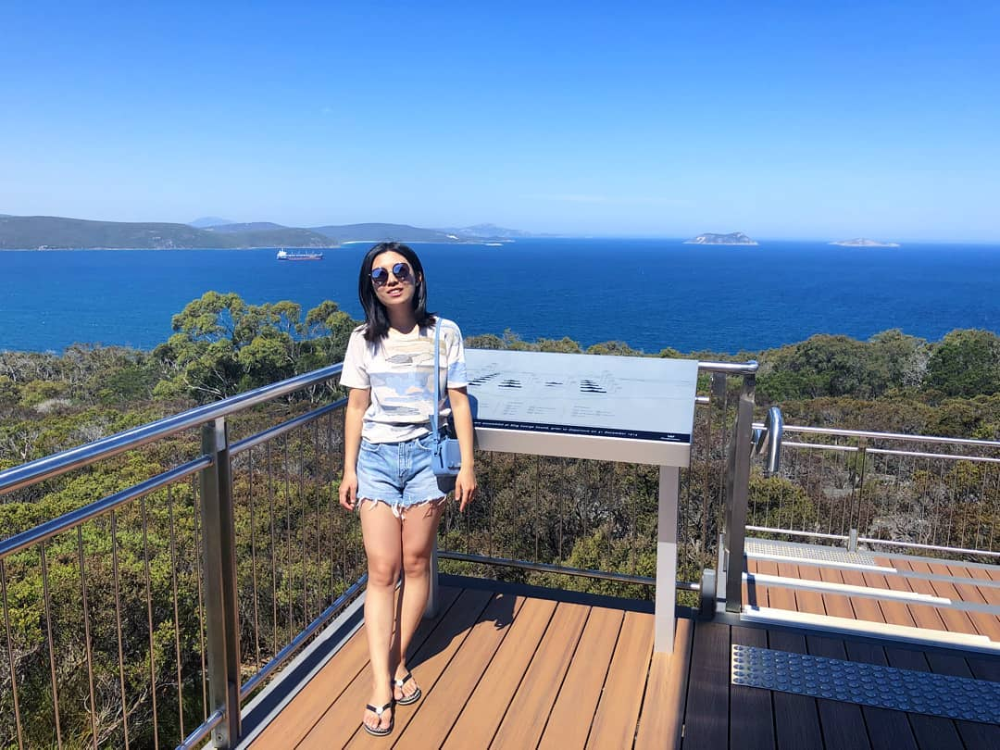

About Me
I'm Ph.D. candidate at the University of Illinois Urbana-Champaign. My advisor is Pierre Albin .
My research lies in geometric analysis, with a focus on the boundary asymptotics of conformally compact Lovelock metrics, which generalize the Einstein equations in higher-curvature gravity theories. I also study Witten instanton complexes on singular spaces, particularly stratified pseudomanifolds equipped with wedge metrics, where analytic and topological methods intersect.
In June 2017, I graduated from the University of Liverpool with honors in Mathematics.
Contact Info
- Email: xinran4@illinois.edu
- Office: 108 Altgeld Hall, 1409 W. Green Street, Urbana, IL 61801
- GitHub: xinrany